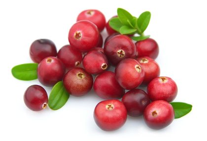

Cranberry (Vaccinium macrocarpon)

Mating & Breeding System: Cranberry is dependent on insect pollinators, and very little marketable fruit will set in the absence of pollinators. Cross-pollination is the rule, as male and female structures mature at different times within a given flower, and the downward-facing form of the flower discourages selfing via wind or gravity. Reproductive stems will generally abort excess flowers leaving an average of three per flowering stem even when pollinated.
Pollination, Quality & Yield: Cross-pollination results in larger fruit with more seeds, and self-pollinated flowers may abort their seeds in favour of cross-pollinated flowers.
If the pink colour of the cranberry flower intensifies with age, it indicates poor pollination. This can serve as an indication of pollination levels across an entire bog. In commercial plantations, honey bees will deliver enough pollen for optimal fruit set and the production of large berries, and can provide more even pollination across the bog.
Pollination Recommendations: Cranberry is not a strong producer of either pollen or nectar.
Although honey bees do not buzz pollinate, this drawback does not seem as great as with other flowers needing buzz pollination (i.e. tomato, blueberry) because the bees can still extract pollen by drumming or stroking the anthers. Usually, however, the pollen collected by the honey bees is incidental to their nectar foraging. Because they are not enthusiastic foragers on cranberry, the recommended stocking rate is somewhat broad (2.5-7.5 hives per hectare). This range may reflect the variation associated with wild bee populations near the bog.
Numerous wild bees have been observed foraging on cranberry, typically 25-30 species in a given area. Large bees are the most effective pollinators. The effectiveness of wild pollinators depends on the ratio of edge habitat to the area of the bog, because they will travel only a short distance from their nesting habitat. In large bogs with limited edge habitat, honey bees or bumble bees should be added. Artificial nesting sites such as bundle of reeds, drilled wooden blocks, and untilled dry soil around field margins can increase wild bee populations in the long term.
Competing blooms at the field edges should be mowed when cranberry is blooming. At other times they can provide valuable resources for wild pollinators, and growers are encouraged to provide alternate forage at the bog edges (particularly plants that flower before or after the crop).
The leafcutter bee Megachile addenda can provide excellent pollination in cranberry, but it is difficult to rear on a commercial scale because of problems with parasites.
References
Broussard, M., Rao, S., Stephen, W.P., & White, L. 2011. Native bees, honeybees, and pollination in Oregon ranberries. HortScience 46:885-888.
Brown, A.O. & McNeil, J.N. 2006. Fruit production in cranberry (Ericaceae: Vaccinium macrocarpon): a bet-hedging strategy to optimize reproductive effort. American Journal of Botany 93:910-916.
Cane, J.H., & Schiffhauer, D. 2003. Dose-response relationships between pollination and fruiting refine pollinator comparisons for cranberry (Vaccinium macrocarpon [Ericaceae]). American Journal of Botany 90:1425-1432.
Cane, J.H., Schiffhauer, D., & Kervin, L.J. 1996. Pollination, foraging, and nesting ecology of the leaf cutting beeMegachile (Delomegachile) addenda (Hymenoptera: Megachilidae) on cranberry beds. Annals of the Entomological Society of America 89:361-367.
Delaplane, K.S. & Mayer, D.F. 2000. Crop Pollination by Bees. CABI Publishing, New York.
Evans, E.C. & Spivak, M. 2006. Effects of honey bee (Hymenoptera: Apidae) and bumble bee (Hymenoptera: Apidae) presence on cranberry (Ericales: Ericaceae) pollination. Journal of Economic Entomology 99:614-620.
Kevan, P.G. 1988. Pollination, crops and bees. OMAFRA publication 72.
Kevan, P.G., Gadawski, R.M., Kevan, S.D., & Gadawski, S.E. 1983. Pollination of cranberries, Vaccinium macrocarpon, on cultivated marshes in Ontario. Proceedings of the Entomological Society of Ontario 114:45-53.
Loose, J.L., Drummond, F.A., Stubbs, C., Woods, S., & Hoffmann, S. 2005. Conservation and management of native bees in cranberry. Maine Agricultural and Forest Experiment Station Technical Bulletin # 191, University of Maine, Orono, ME.
MacKenzie, K.E. 1994. The foraging behavior of honey bees (Apis mellifera L) and bumble bees
(Bombus spp) on cranberry (Vaccinium macrocarpon Ait). Apidologie 25:375-383.
Mohr, N.A. & Kevan, P.G. 1987. Pollinators and pollination requirements of lowbush blueberry (Vaccinium angustifolium Ait and V. myrtilloides Michx.) and cranberry (V. macrocarpon) in Ontario with notes on highbush blueberry (V. corymbosum L.) and lingonberry (V. vitis-idaea L.). Proceedings of the Entomological Society of Ontario118:149-154.
Ratti, C.M., Higo, H.A., Griswold, T.L., & Winston, M.L. 2008. Bumble bees influence berry size in commercialVaccinium spp. cultivation in British Columbia. Canadian Entomologist 140:348-363.
Sarracino, J.M. & Vorsa, N. 1991. Self and cross fertility in cranberry. Euphytica 58:129-136.
Scott-Dupree, C.D., Winston, M., Hergert, G., Jay, S.C., Nelson, D., Gates, J., Termeer, B., & Otis, G. 1995. A guide to managing bees for crop pollination. Canadian Association of Professional Apiculturists, Aylesford NS.